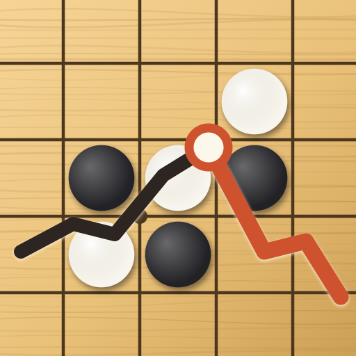

分かれ目のリバーシ
打ち終わったら、勝ち負けが入れ替わった1手を、計算で見つけるリバーシ。
8×8 のリバーシです。コンピュータ（入門・初級・中級・上級・名人の5段）と打つか、1台をふたりで回して打ちます。打ち終わったら「分かれ目を見る」で、1手ごとの形勢を線にして、勝てた形勢が負けに変わった1手（分かれ目）を見つけ、その前から打ち直せます。
- 分かれ目の1手：空きが16ます以下の所は、最後まで全部の手を読み切るので、「この手で、+10 で勝てた形勢が -14 の負けに変わった」と言い切れます。それより前は、何手か先までの読みから出した「見込み」です
- 一番よい手：分かれ目の局面で一番よい手（朱の ○）と、打った手（朱の ×）を、盤に並べて見せます
- 打ち直し：「分かれ目の前から、もう一度」で、そこから打ち直せます。線をなぞれば、どの局面からでも打ち直せます
- 打てる所の印・待った・投了・続きから・強さごとの成績
- オンライン対戦はありません。対局の途中・始め・終わりに、画面いっぱいの広告は出ません（画面のいちばん下の小さな広告だけです）。登録・課金はありません